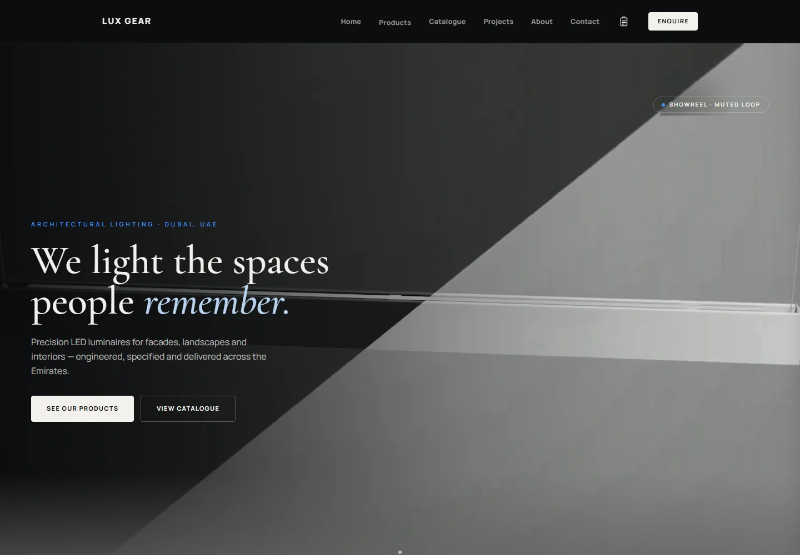

Flagship case study / Lux Gear / UAE
Lux Gear.
One connected system.
Behind a lighting catalogue sits a much larger job: keeping product information accurate, producing technical documents and helping a small team keep work moving.
My work
Full-stack development, workflow design, document generation and AI integration.
Core stack
Next.js · TypeScript · PostgreSQL
Supabase Auth & Storage · React Native
Delivery
Live web foundation, with further document and mobile work in development.

01 / Product information
Enter it once.
Use it in the right places.
A lighting product is more than a name and a photograph. Its dimensions, wattage, colour temperature, finish and protection rating need to agree wherever a customer sees them.
The CMS gives staff a structured product record. Shared templates turn that record into the public product page and technical datasheet, instead of maintaining unrelated copies by hand.
Specifications, options and images
- Public product page
- Catalogue listing
- Technical datasheet / PDF
Architecture diagram, not a screenshot of private company data.
The engineering underneath
The preview and exported PDF share the document layout. Export handling deals with image readiness, page limits and failure recovery. Clear save and download states matter: a failed export should not make someone repeat a successful save or accidentally publish a product.
02 / Team operations
A task list that remembers
what actually happened.
Staff can add their own work, receive assignments, record blockers and time, and finish tasks. Managers can set priorities and require approval on selected work. The project tracker organises separate parts of a job on a board, with the related files kept together.
History, not just the latest state
Task versions preserve what was open or finished on a selected UAE work date. Completing something later does not rewrite yesterday. Manager deletion is soft deletion, so it does not erase the earlier record.
One identity, enforced access
Individual staff accounts connect the CMS and Team Hub. Permissions are checked at the server and database, not just by hiding buttons. Private project files stay behind access checks.
The web task foundation and preliminary project/file workspace are deployed. Notification delivery still depends on each device’s permission and subscription; end-to-end phone acceptance is a separate check.
03 / The difficult part
Reading a document is not
the same as understanding the job.
An Excel BOQ, a technical PDF and an approved sample can disagree. A quantity may belong to a different fitting. A standard size might replace a custom size only because someone approved that particular sample.
That changes the design of the enquiry workflow. It needs to retain the original evidence, the proposed selection and the human decision—not silently overwrite one with another.
Example of the decision, not a universal rule
“Use the standard size”
Was that a stock constraint, a cheaper alternative or an approved substitution? The next project may need a different answer. The workflow keeps unresolved facts visible rather than treating a previous choice as permission to repeat it.
Where AI belongs
Help read and organise source material, retain page and image references, and suggest structured fields. Keep uncertain quantities and conflicting specifications for review. Preparation and final approval are different responsibilities; an AI suggestion does not replace either.
04 / Beyond the live foundation
Connected workflows.
Honest delivery boundaries.
These are further engineering work within the same system, not additional completed client projects. Status below reflects the 22 October 2026 development checkpoint.
- Enquiry Builder improvements Built locally · acceptance pending
- PDF fitting schedules, source-picture placement, editable Excel descriptions and explicit missing/conflicting facts. Unfamiliar layouts still need review; the newer parser is not yet deployed.
- Quotation & invoice conversion Built locally · not released
- Append documents to saved batches, check duplicates and failed files, then export against supplied Zoho column templates. A real accounting import and the paid reader remain separate acceptance gates.
- Native Android Team Hub APK built · phone acceptance pending
- A React Native interface—not a website container—with shared accounts, an offline outbox and reconnect sync. The native notification backend is activated; real locked-phone receipt is not yet verified.
- Project-aware automation Further work · not autonomous today
- Linked email, suggested assignments and follow-ups are the longer-term direction. Automatic mailbox reading, sending and independent business decisions are not presented as working features.
The work behind the screens
Product data. Documents.
People. One connected system.
This is the part of software development I enjoy: finding where information gets lost, making the rules explicit, and building around how people actually work.